Forutsetning: Du har akseptert overføringen av repoet til din GitHub-konto (e-posten fra GitHub med «Accept repository transfer»). Har du ikke gjort det ennå? Gå tilbake til del 1 og fullfør steg 6.
Installer GitHub Desktop — det siste verktøyet
Dette er det aller siste verktøyet du trenger å installere. GitHub Desktop kopierer filene til datamaskinen din og holder dem oppdatert — uten å skrive kommandoer.
Videoguide for installasjon
Last ned og installer
Du blir sendt til nedlastingssiden. Klikk «Download for Windows (64bit)» — eller «Download for macOS» hvis du er på Mac.
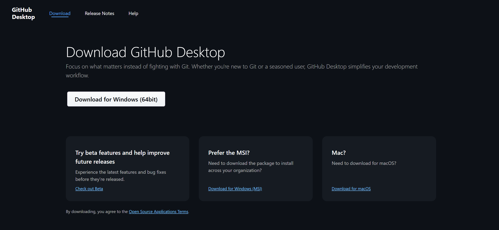
Filen lastes ned i nettleseren. Klikk «Åpne fil» (Windows) eller kjør .dmg-filen (Mac) for å installere.
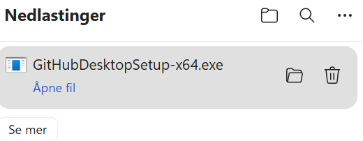
Logg inn med GitHub-kontoen din
GitHub Desktop åpner seg automatisk med en velkomstskjerm. Klikk «Sign in to GitHub.com».
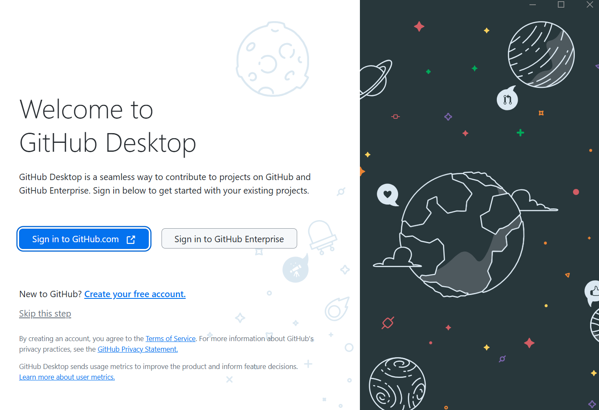
Nettleseren åpner en innloggingsside. Skriv inn brukernavnet og passordet du opprettet i modul 04, og klikk «Sign in».
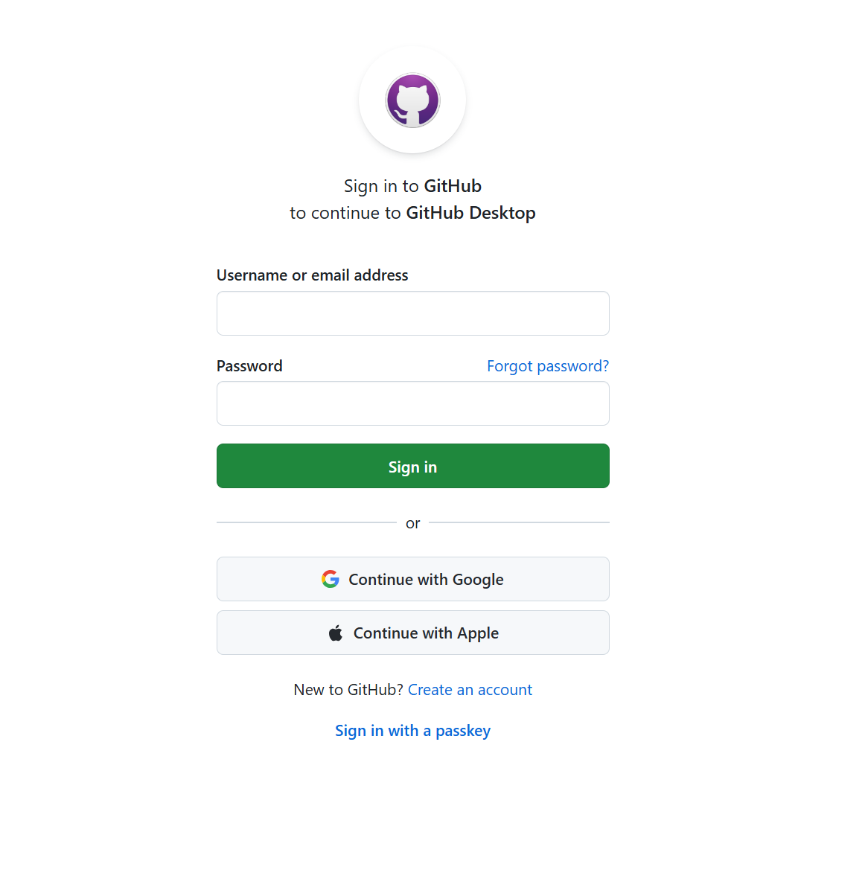
Bekreft enheten din
GitHub sender deg en engangskode på e-post for å bekrefte at det er deg. Sjekk innboksen din, kopier koden og lim den inn i feltet under «Device Verification Code». Klikk «Verify».
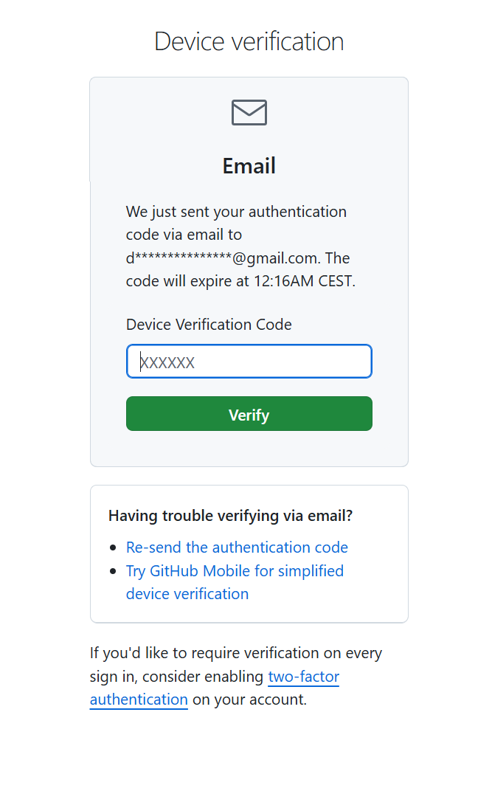
Godkjenn GitHub Desktop
GitHub spør deg om å godkjenne at GitHub Desktop får tilgang til kontoen din. Klikk «Continue» ved siden av brukernavnet ditt.
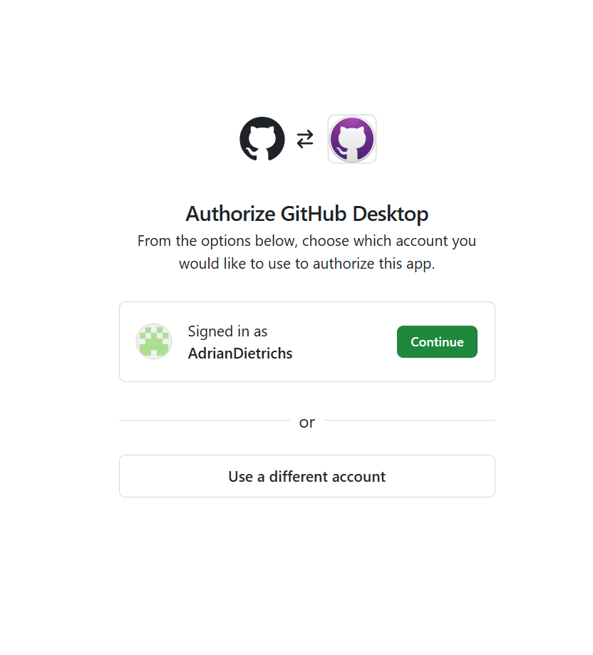
Klikk deretter «Authorize desktop» for å gi GitHub Desktop tilgang.
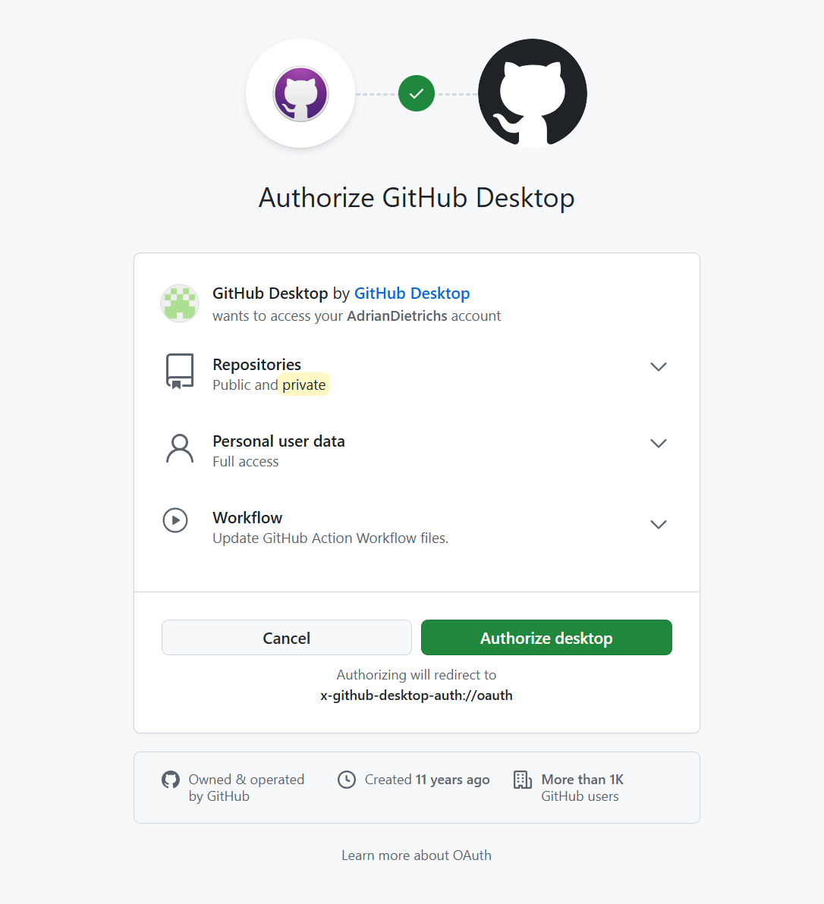
Nettleseren spør om du vil åpne GitHub Desktop igjen. Klikk «Åpne».
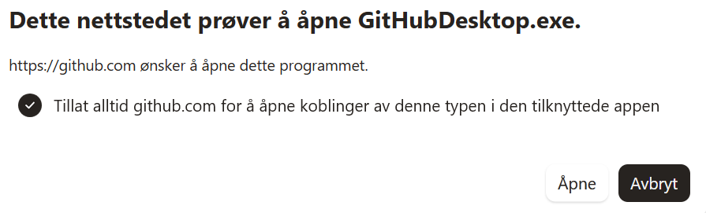
Fullfør oppsettet
GitHub Desktop ber deg bekrefte navn og e-post som brukes på endringene du lagrer. La alt stå som det er og klikk «Finish».
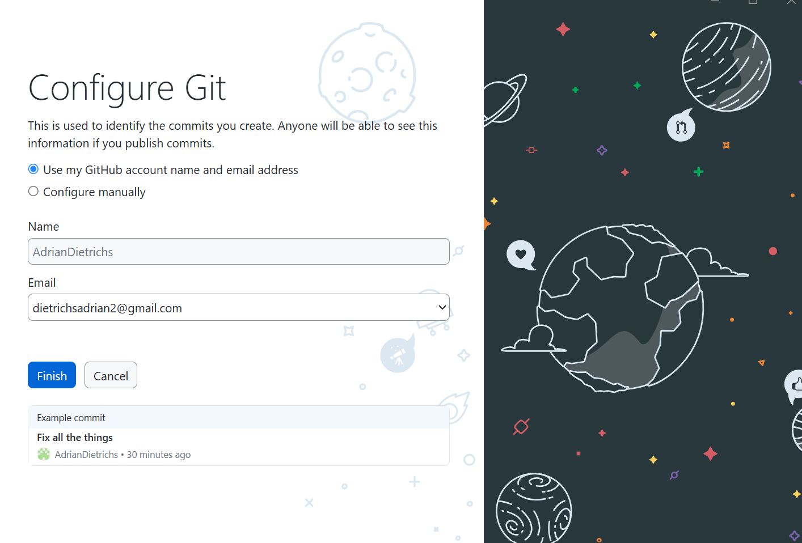
Steg 1 — Kopier nettsidefilene til datamaskinen din
Nå skal du kopiere alle filene til nettsiden din fra GitHub over til datamaskinen din. Denne operasjonen kalles «kloning». Du gjør det én gang — etterpå åpner du GitHub Desktop og jobber videre derfra.
Finn repoet ditt i GitHub Desktop
GitHub Desktop viser nå en «Let's get started»-skjerm. Repoet ditt (det heter noe slikt som brattoy-redesign) skal allerede ligge i listen til venstre. Klikk på det, og klikk deretter «Clone [repo-navn]»-knappen nederst.
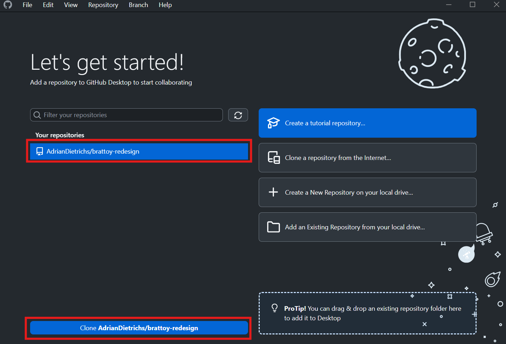
Velg hvor filene skal lagres
Et dialogvindu åpner seg. Klikk «Choose...» og velg en mappe du husker. Vi anbefaler å lage en ny mappe på Skrivebordet — da er den alltid lett å finne. Klikk «Clone». GitHub Desktop kopierer alle filene til nettsiden din dit.
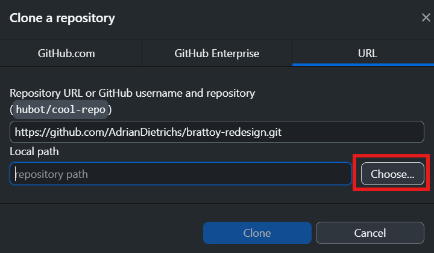
Åpne filene i VS Code
Når kloningen er ferdig, klikk «Open in Visual Studio Code» i GitHub Desktop.
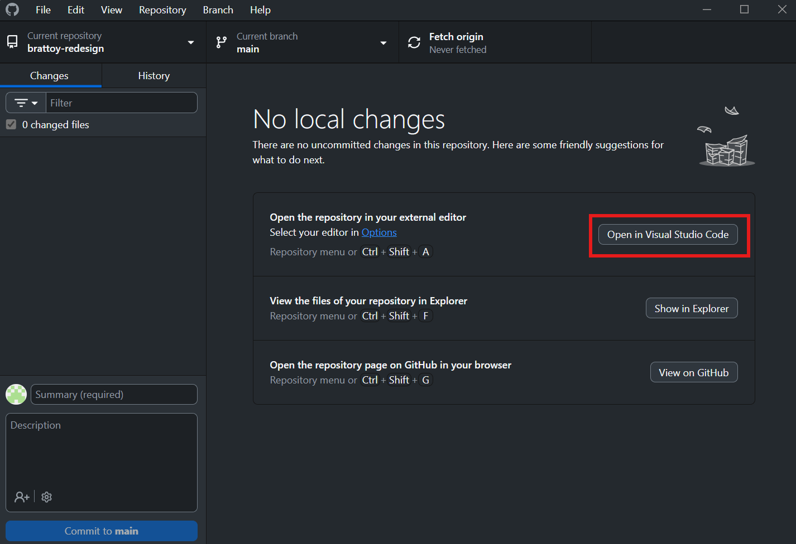
VS Code kan spørre om du stoler på filene i mappen — klikk «Yes, I trust the authors». VS Code åpner seg med alle filene til nettsiden i panelet til venstre (Explorer): index.html, style.css, bilder osv.
Steg 2 — Forhåndsvis nettsiden
La oss ta et sekund og se hva du faktisk har gjort. Mappen du nettopp klonet inneholder hele nettsiden din — alle HTML-filer, bilder og stilark er nå på datamaskinen din. Du kan åpne index.html direkte i nettleseren og se nettsiden akkurat slik den er i dag, uten internett.
Åpne index.html i nettleseren
- I VS Code: høyreklikk på
index.htmli Explorer-panelet til venstre - Velg «Reveal in File Explorer» (Windows) eller «Reveal in Finder» (Mac)
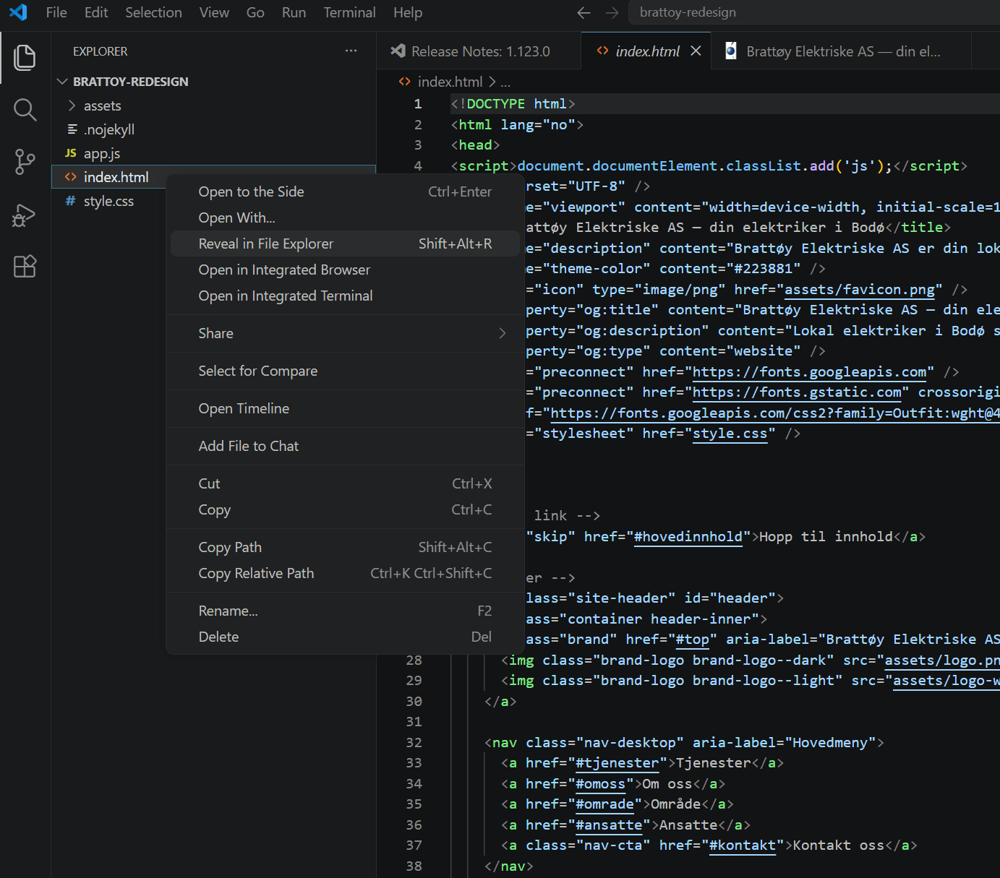
- Dobbelklikk på
index.htmli vinduet som åpner seg
Åpner den seg i VS Code eller Notisblokk i stedet? Høyreklikk på filen → Åpne med → velg Chrome, Edge eller Firefox.
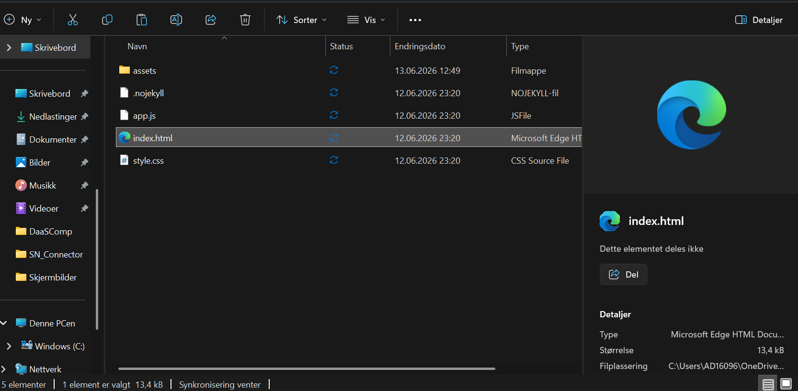
Nettsiden åpner seg i nettleseren din — akkurat slik den ser ut i dag. ✓
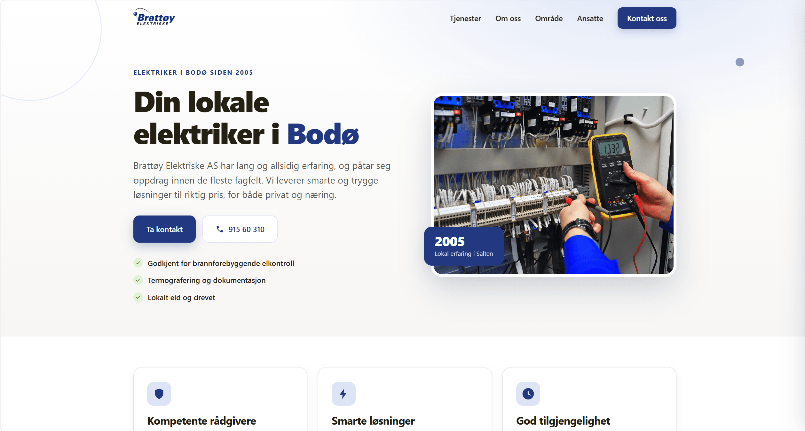
Steg 3 — Velg din arbeidsmetode
Her skiller veiene seg. Begge metodene fungerer — forskjellen er pris og hvor mye du gjør manuelt.
Velg din arbeidsmetode
Åpne Google AI Studio
For gratis-sporet bruker du Google AI Studio — en gratis nettside fra Google. Ingen nedlasting, ingen installasjon. Alt du trenger er en Google-konto og en nettleser.
Gå til Google AI Studio
Åpne nettleseren din og gå til aistudio.google.com. Logg inn med Google-kontoen din (den du bruker til Gmail eller YouTube).
Start en ny samtale
Klikk «+ New prompt» øverst til venstre for å starte en tom chat.
Du er inne
Du ser en chat-boks. Prøv å skrive «Hei, hvem er du?» — AI-en svarer. Google AI Studio er helt gratis og har ingen meldingsgrense.
Slik fungerer arbeidsflyten din
Google AI Studio er ikke koblet direkte til GitHub — du er broen mellom de to. Det er noen steg, men helt overkommelig når du har gjort det noen ganger:
- VS Code — åpne filen du vil endre, marker alt (
Ctrl+A) og kopier (Ctrl+C) - Google AI Studio — ny prompt, lim inn koden og beskriv hva du vil endre
- AI-en svarer med ny, komplett fil — kopier svaret
- VS Code — marker alt, lim inn, trykk
Ctrl+S - Nettleseren — trykk F5, sjekk at det ser riktig ut
- VS Code Source Control — commit + push, og endringen er live om 30–60 sek
Første test — prøv det nå
Åpne index.html i VS Code
Klikk på index.html i Explorer-panelet. Filen åpner seg i editoren til høyre.
Kopier hele filen
Klikk inne i kodefeltet. Trykk Ctrl+A (Mac: Cmd+A) for å markere alt, deretter Ctrl+C for å kopiere.
Åpne Google AI Studio — ny prompt
Gå til aistudio.google.com → klikk «+ New prompt». Lim inn koden (Ctrl+V) og skriv meldingen din, f.eks.:
Her er koden til nettsiden min: [lim inn koden]. Kan du endre telefonnummeret i bunnen til 99 88 77 66?
Kopier AI-ens svar
AI-en svarer med den komplette, oppdaterte filen. Klikk «Copy»-knappen over kodeblokken (eller marker alt og kopier manuelt).
Lim inn i VS Code og lagre
Tilbake i VS Code: klikk inne i filen, trykk Ctrl+A og deretter Ctrl+V for å erstatte innholdet med Claudes versjon. Trykk Ctrl+S for å lagre.
Sjekk i nettleseren
Gå til nettleserfanen med den lokale siden og trykk F5. Ser du det nye telefonnummeret?
Send til GitHub — gjør det live
I VS Code: klikk ikonet med tre prikker forbundet med linjer i sidepanelet til venstre (Source Control). Du ser index.html under «Changes».
- Klikk «+» ved siden av filen for å «stage» endringen
- Skriv en kort melding i feltet øverst, f.eks. «Oppdaterte telefonnummer»
- Klikk «Commit», deretter «Sync Changes» (eller «Push»)
Vent 30–60 sekunder — gå til nettstedet ditt live og bekreft at endringen er der. Det fungerte! 🎉
Kjøp Claude Pro
Pro-abonnementet gir deg ubegrenset antall meldinger og en bedre modell. Arbeidsflyten er den samme som gratis-sporet — du kopierer HTML inn, beskriver endringen og kopierer svaret tilbake — men du bruker Claude-appen i stedet for Google AI Studio.
Gå til claude.ai og oppgrader
Gå til claude.ai. Opprett en konto (eller logg inn) og klikk «Upgrade to Pro». Prisen er $20 per måned (~190 kr). Du kan si opp når som helst på «Settings → Billing».
Fyll inn betalingsinformasjon
Skriv inn kortinformasjonen din og bekreft abonnementet.
Last ned Claude-appen
Last ned og installer appen
Gå til claude.ai/download. Klikk nedlastingsknappen for Windows eller Mac. Installer appen som du ville installert et hvilket som helst program.
Logg inn med Pro-kontoen din
Åpne Claude-appen og logg inn med samme e-post og passord du brukte da du kjøpte Pro. Du ser nå «Claude Pro» som aktiv plan — da er alt i orden.
Slik fungerer arbeidsflyten din
Samme arbeidsflyt som gratis-sporet — du er broen mellom VS Code og Claude-appen. Forskjellen er at du aldri treffer en meldingsgrense:
- VS Code — åpne filen du vil endre, marker alt (
Ctrl+A) og kopier (Ctrl+C) - Claude-appen — ny samtale, lim inn koden og beskriv hva du vil endre
- Claude svarer med ny, komplett fil — kopier svaret
- VS Code — marker alt, lim inn, trykk
Ctrl+S - Nettleseren — trykk F5, sjekk at det ser riktig ut
- VS Code Source Control — commit + push, og endringen er live om 30–60 sek
Første test — prøv det nå
Åpne index.html i VS Code
Klikk på index.html i Explorer-panelet. Filen åpner seg i editoren til høyre.
Kopier hele filen
Klikk inne i kodefeltet. Trykk Ctrl+A (Mac: Cmd+A) for å markere alt, deretter Ctrl+C for å kopiere.
Åpne Claude-appen — ny samtale
Klikk «New conversation». Lim inn koden (Ctrl+V) og skriv meldingen din, f.eks.:
Her er koden til nettsiden min: [lim inn koden]. Kan du endre telefonnummeret i bunnen til 99 88 77 66?
Kopier Claudes svar og lim inn i VS Code
Claude svarer med den komplette, oppdaterte filen. Klikk «Copy»-knappen over kodeblokken. Tilbake i VS Code: trykk Ctrl+A → Ctrl+V → Ctrl+S for å erstatte og lagre.
Sjekk i nettleseren og gjør det live
Trykk F5 i nettleserfanen. Ser du det nye telefonnummeret? I VS Code: klikk Source Control, trykk «+» ved filen, skriv en kort melding, klikk «Commit» → «Sync Changes». Live på 30–60 sek. 🎉
Du har nå gjort den største jobben. Oppsett er det tyngste steget — og det er unnagjort. Fremover er det bare å åpne Google AI Studio (gratis) eller Claude-appen (Pro), gjøre endringen og trykke Commit & Push. Kortere og kortere for hvert gang.
- Nettsidefilene kopiert over til datamaskinen din
- Nettsiden forhåndsvist i nettleseren
- Google AI Studio (gratis) eller Claude-appen (Pro) satt opp og klar til bruk
- Du har gjort en ekte endring fra start til slutt